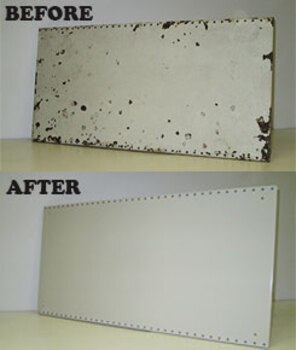
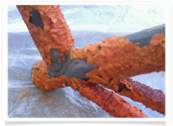
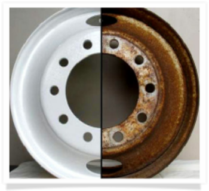

The appearance and hard-wearing properties of Powder Coating have made it the coating of choice in the retail equipment market. There is a disadvantage though: the durability of Powder Coating makes it difficult to remove.
For example, Powder Coating on steel shelving can be removed by sand blasting, but abrasive blasting can reduce the shelving to scrap metal by leaving a rough surface, and by generating heat that can distort it.
Another option is to break down the integrity of the coating by heating it to a very high temperature, so it can be remove by means of light sand blasting. However, once again the problem is heat, which can distort the steel sheeting.

Cold chemical stripping of Powder Coating and wet coating is very successful, but is also costly and extremely dangerous for the operator. The chemicals are highly toxic: their fumes are harmful to the lungs, and can remove skin on contact, causing severe chemical burns.
However, a spokesman for Jondec Powder Coating says that after using all these methods to strip Powder Coating from steel, his company has developed a hot chemical process that leaves steel undamaged and ready to coat. The process can be used on all types of equipment. The need to scrap and replace equipment is thus greatly reduced.

"The hot chemical process has created an opportunity for traders in the retail industry to refurbish store equipment, especially when matching and complementing new equipment, at a fraction of the cost."
The spokesman says that Corporate Supermarkets are now becoming Family Supermarket franchise stores. The hot chemical process will benefit franchisees, because savings on refurbishment can be invested in trading stock.